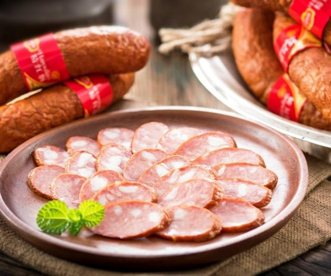
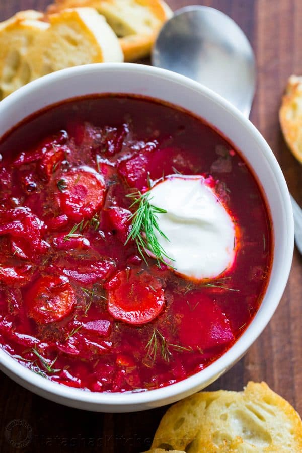

Top 3 Food in Harbin
Harbin Red Sausage (Harbin Hongchang)

Introduction
Harbin Red Sausage is the city’s most famous snack—with roots in Russian “kolbasa,” it was adapted by local butchers in the early 1900s and has been a staple ever since. It’s made with a mix of pork (70%) and beef (30%), ground and seasoned with black pepper, garlic, and a hint of nutmeg. The meat is stuffed into natural casings, smoked over hardwood (usually birch, for a subtle sweet aroma), and then boiled to lock in juiciness. The result is a sausage with a firm, slightly chewy texture, a deep reddish-brown color, and a savory, smoky flavor. Locals eat it cold (sliced as a side dish), grilled (crispy on the outside), or chopped into salads—you’ll find it at every street stall, market, and supermarket in Harbin.
Taste
Texture: Firm but not tough—bites easily, with a slight “snap” from the casing, and the meat inside is juicy (not dry).
Flavor: Savory with a bold smoky note (from birch wood grilling), balanced by mild garlic and black pepper—no overpowering spices, so it’s easy to eat on its own.
Pairing: Perfect with cold beer in summer, or sliced into hot congee in winter; also tastes great with Russian-style black bread (soak up the juice!).
Price
Street stalls/markets: 40–60 CNY/kg (fresh, no packaging); 5–8 CNY per individual sausage (great for on-the-go).
Branded versions (e.g., “Harbin First Sausage”): 80–120 CNY/kg (vacuum-sealed, good for souvenirs—lasts 1 month at room temperature).
Grilled at street carts: 8–10 CNY per sausage (served with a sprinkle of chili powder if requested).
Russian-Style Borscht

Introduction
Borscht is Harbin’s love letter to its Russian roots—adapted slightly for local tastes (less sour than traditional Russian versions), it’s a hearty soup that warms you up on cold winter days. The base is beets (which give it a bright red color), simmered with potatoes, carrots, onions, cabbage, and beef (or pork, for a richer flavor). It’s seasoned with tomato paste, a touch of sugar (balances the beet’s earthiness), and a splash of vinegar (for tang). The finishing touch is a dollop of sour cream—when stirred in, it turns the soup a creamy pink and softens the bold flavors. You’ll find it in every Russian café in Harbin, from cozy hole-in-the-wall spots to upscale restaurants.
Taste
Broth: Tangy (from beets and vinegar) with a subtle sweetness (sugar and carrots), and deep savory notes from the slow-cooked beef.
Veggies: Potatoes are soft and absorbent, cabbage adds crunch, and beets give a mild earthy flavor—no single ingredient overpowers the others.
Sour cream: Cuts through the tang and adds creaminess, making the soup feel indulgent but not heavy.
Price
Small Russian cafés: 25–35 CNY/bowl (served with a slice of Russian black bread).
Upscale restaurants: 45–60 CNY/bowl (larger portion, plus a side of pickled cucumbers).
Homemade-style stalls (Daowai District): 20–25 CNY/bowl (heartier, more meat).
Russian Honey Cake (Medovik)

Introduction
Medovik (Russian Honey Cake) is Harbin’s favorite sweet treat—layered, moist, and not overly sweet, it’s a staple in bakeries and cafes. It’s made with 8–10 thin sponge cake layers, each mixed with honey (gives it a golden color and floral flavor) and baked till crisp around the edges. The filling is thick sour cream frosting (sour cream + sugar + a touch of vanilla), which is spread between each layer and over the top and sides. Some versions add a drizzle of honey or chopped walnuts for extra texture. Unlike dense Western cakes, Medovik is light—each bite has a mix of crispy cake and creamy frosting, with the honey adding a subtle warmth.
Taste
Cake layers: Crispy on the edges, soft in the middle, with a strong honey aroma (not cloying—just sweet enough).
Frosting: Tangy (from sour cream) with a hint of vanilla—balances the honey’s sweetness, so the cake doesn’t feel heavy.
Overall: Light, creamy, and comforting—great with a cup of black tea (cuts through the creaminess) or coffee.
Price
Bakeries (Central Avenue): 35–50 CNY for a small cake (6–8 slices); 8–12 CNY per slice.
Russian cafes: 15–20 CNY per slice (served with a dollop of extra sour cream or a drizzle of honey).
Gift boxes (for souvenirs): 80–120 CNY (1kg cake, vacuum-sealed—lasts 3 days at room temperature).